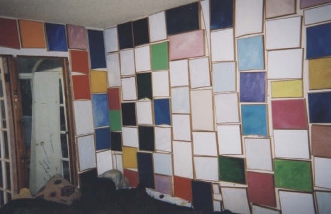

They say your walls should look no different than your work,
but that is only a feeble prediction of the future. We know the
ego is the true maker of history, and if it isn't, it should be no
concern of yours.

66 LARRY RIVERS & FRANK O'HARA
Let me first announce a very modest frame of mind. I've got
the declamatory stance, moving my hand...
I saw somebody. It was two days ago. That was on First
Avenue. A phone booth. Then this... Talking to somebody
in a phone booth and he was looking straight and he was
gesturing. That's not unusual. It struck me because I'd seen
a couple of other things...
I'd seen these pigeons and they were bathing... you know,
a sylvan romantic scene, bathing birds and bathing
nymphs... but it was slop! Thinned-out garbage that they
were bathing in with enthusiasm!
Then this private phone conversation excluding everything
except the person in the telephone booth but which
established the person he was talking to like a hologram
that no one else sees.
So I look up and see a helicopter. It was the day after
A-Team If I see a helicopter, that clicks on television. It's
an association that was new to me as something I could
recognize as a connection, not a metaphor but what it's
made out of...
OK, the helicopter is concentrated. It's small. It's got a
certain figure like a letter. It means something. So it means
television.
Three trifles stacked up together that stuck in my mind.
56 RICHARD ARTSCHWAGER
Make a sculpture in a way that you speak, as a projection
that dissipates.
58 DENNIS OPPENHEIM
What does "modern" look like?
What does "person" look like?
70 LAWRENCE WEINER
Paint ethereal things, like weather conditions. Paint ice turning
to steam.
88 ROSS BLECKNER